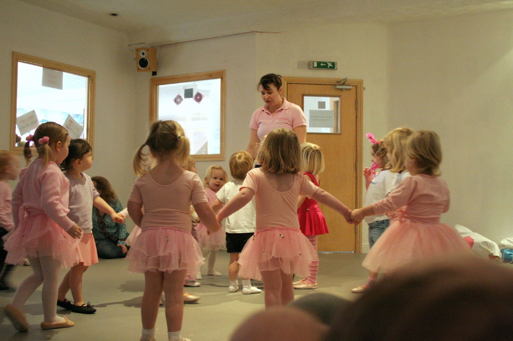
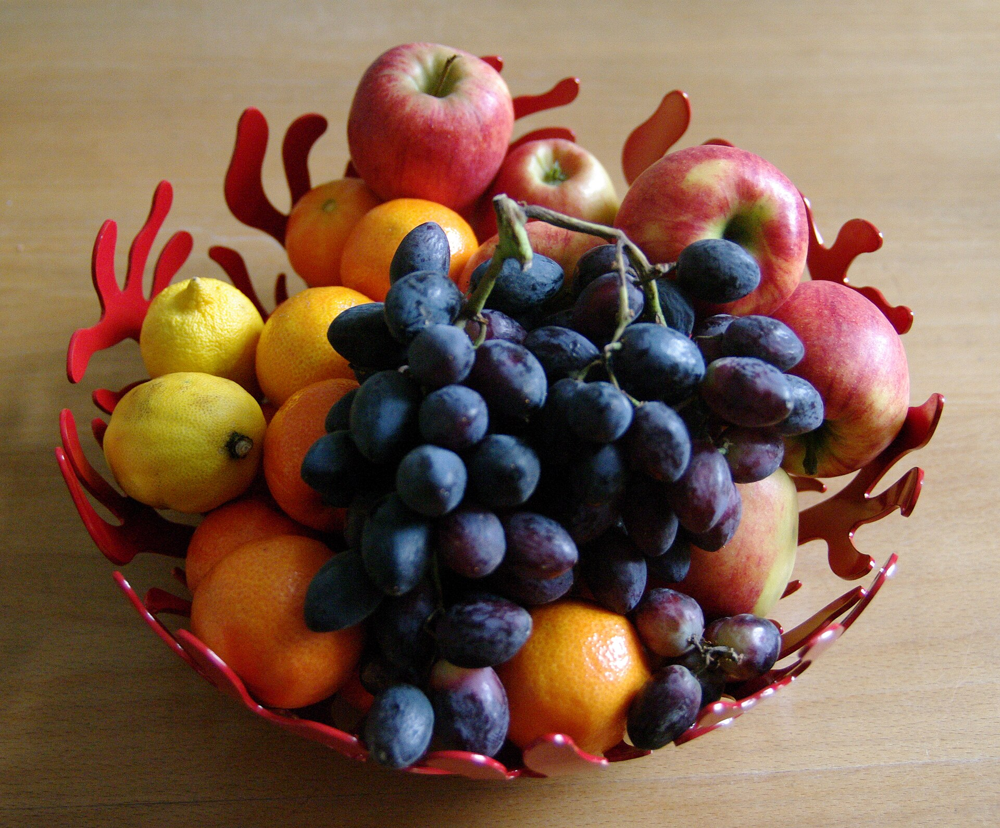

Aulas extras
Equilíbrio, respeito e coordenação. No tatame, as crianças aprendem a cair, levantar e cuidar do colega.
A Viver Aprender é berçário e educação infantil em São Bernardo do Campo, em meio período, semi-integral ou integral.
A Viver Aprender é uma escola de educação infantil e berçário no Jardim Saracantan, em São Bernardo do Campo. Recebemos bebês e crianças de segunda a sexta, das 6h30 às 19h, em meio período, semi-integral ou integral. Nosso ambiente é seguro e acolhedor, pensado para que cada criança se sinta em casa desde o primeiro dia. Aqui a educação é feita com amor e qualidade: as atividades estimulam o aprendizado pela brincadeira, pela música, pelo movimento e pela convivência. Cuidamos do desenvolvimento integral da criança, do corpo à emoção, da linguagem à autonomia, e caminhamos junto com a família em cada etapa. Na nossa fachada está escrito: brincar é também aprender e crescer. É nisso que acreditamos todos os dias. Vem ser parte da nossa família!
Toque em um período e veja quanto do dia seu filho passa com a gente. A escola abre às 6h30 e fecha às 19h.
6h30 às 19h12h30 na escola
O dia todo na escola, das 6h30 às 19h, com refeições, descanso, atividades e aulas extras.
Perguntar sobre o integralHorários de referência. Combinamos o horário exato da sua família na matrícula.
Equilíbrio, respeito e coordenação. No tatame, as crianças aprendem a cair, levantar e cuidar do colega.

Postura, ritmo e expressão. Uma aula leve, de roda e música, para descobrir o corpo brincando.
Cantar, bater, ouvir. Instrumentos simples ajudam na linguagem, na memória e na atenção.

Alimentação acompanhada de perto e hábitos saudáveis desde cedo, do lanche à hora do almoço.
Matrículas abertas para berçário e educação infantil. Garanta já a vaga do seu filho: chame no WhatsApp e agende uma visita.
Rua Carlos Lacerda, 128 · Jardim Saracantan · São Bernardo do Campo, SP · CEP 09780-350